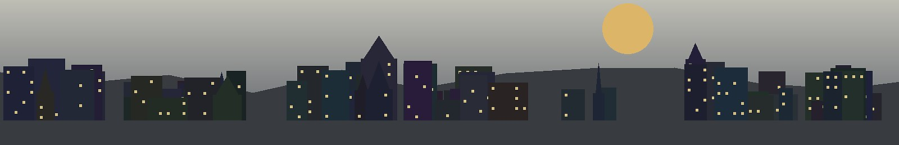

Usufrutto
Usufrutto is the Italian usufruct right. It allows one person to use and benefit from property while another person owns the bare title.
TL;DR
- Usufrutto is the right of use and enjoyment.
- It is the counterpart to Nuda Proprietà.
- The usufruct holder may often live in the property or rent it, depending on the specific right and contract.
- The bare owner must wait until the usufruct ends before full control is obtained.
- For investors, the key questions are duration, cost allocation, rights to rent, and extraordinary works.
Definition
Usufrutto is a property right that gives a person the right to use and enjoy an asset owned by someone else. In real estate, it commonly means that the usufruct holder can live in the apartment and may have certain rights to derive benefit from it, while the bare owner holds title without immediate practical control.
Relation to Nuda Proprietà
In a Nuda Proprietà transaction, the property is split into two economic layers. The buyer receives the bare ownership. The seller or beneficiary keeps the usufruct. The investment value of the bare ownership depends heavily on the expected duration and quality of that usufruct.
Investor questions
- Who is the usufruct holder, and how many holders exist?
- Is the right life-long, temporary or otherwise conditional?
- Does the usufruct holder have the right to rent the property to third parties?
- Who pays ordinary and extraordinary expenses?
- What happens if the property is damaged, abandoned or misused?
- How is the right registered and verified in official documents?
P1 Insight
Understanding usufrutto matters because Italian listings can look deceptively cheap. A €38,000 apartment may not be a distressed bargain; it may be bare ownership with one or more usufruct holders. Without understanding the right of use, the investor cannot interpret price.
Sources & further reading
- Normattiva — Italian legal texts.
- Agenzia delle Entrate — tax and cadastral context.